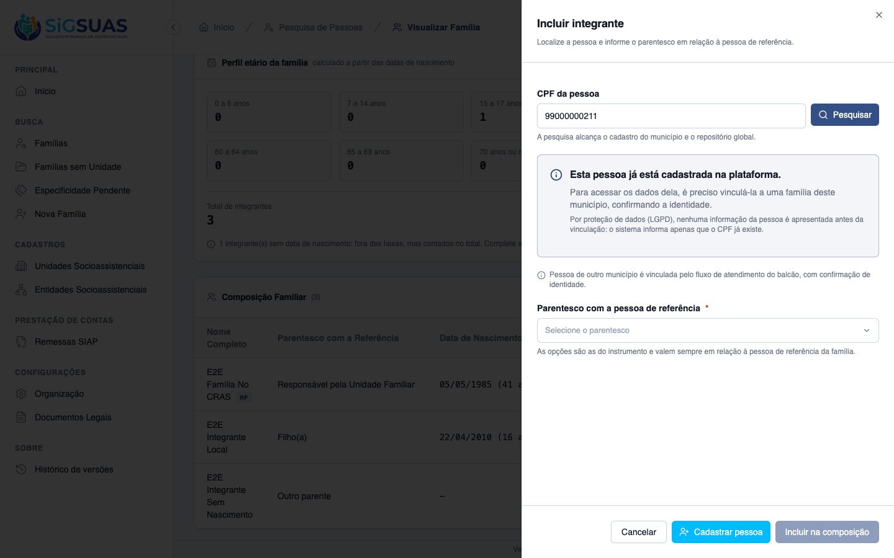
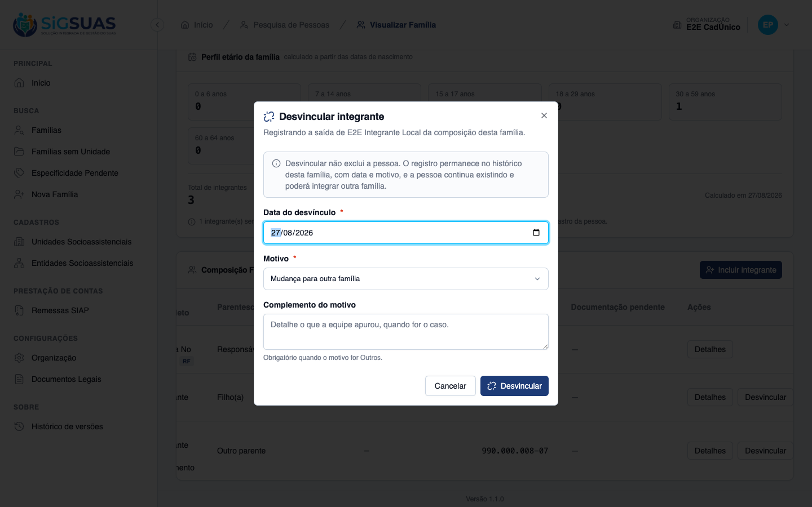
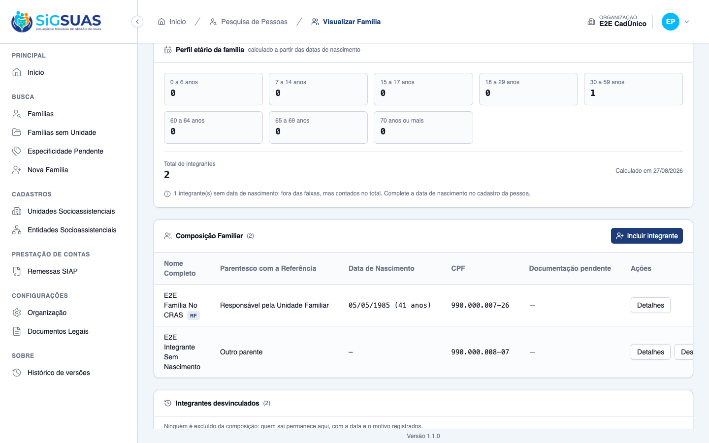
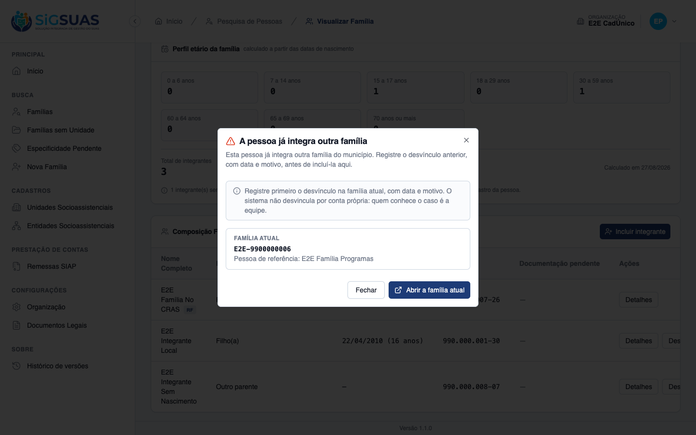
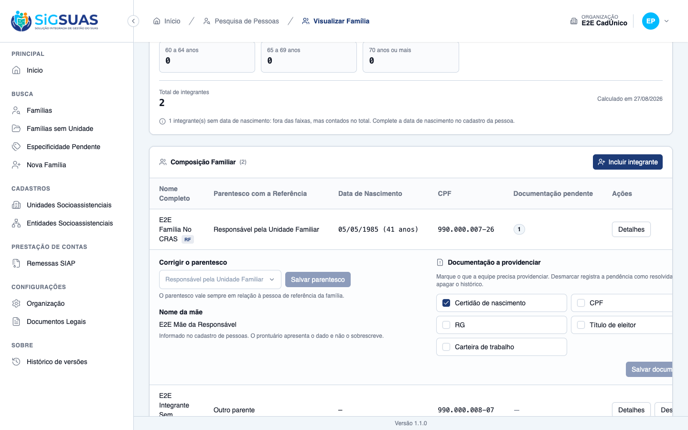
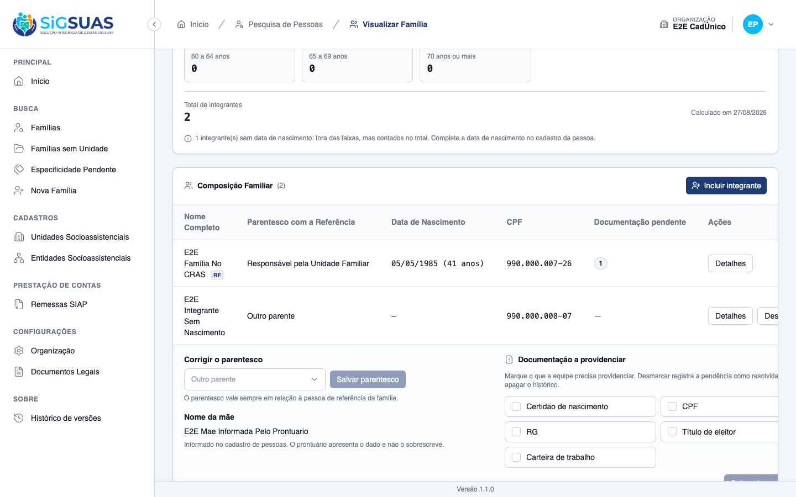
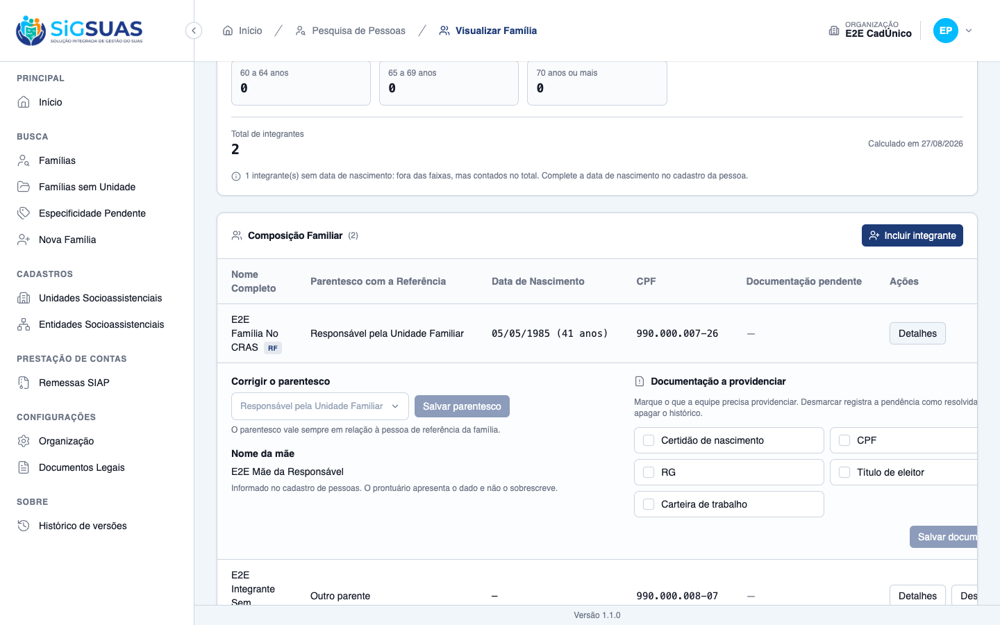
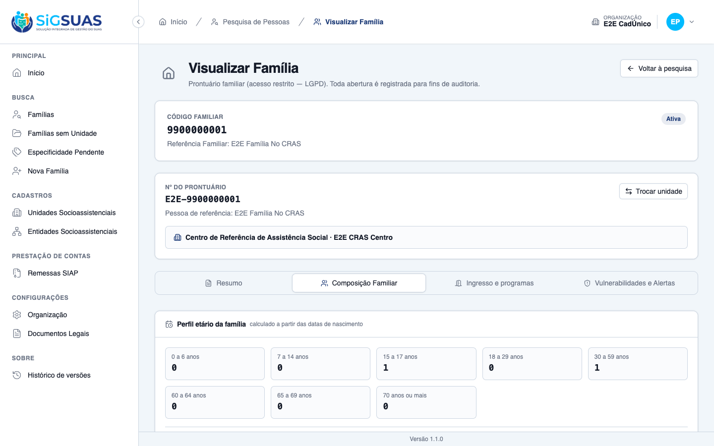
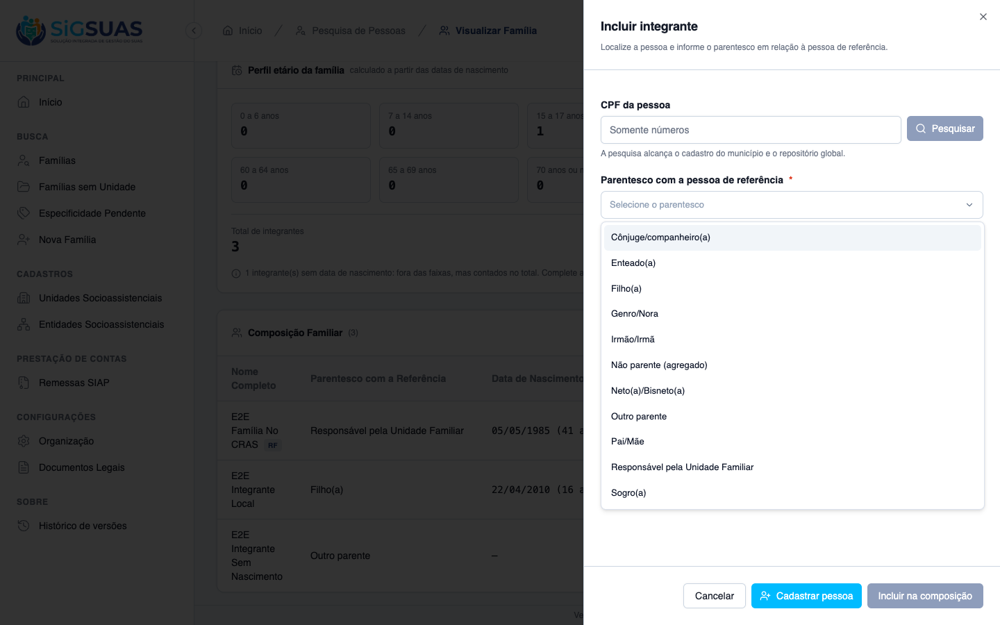
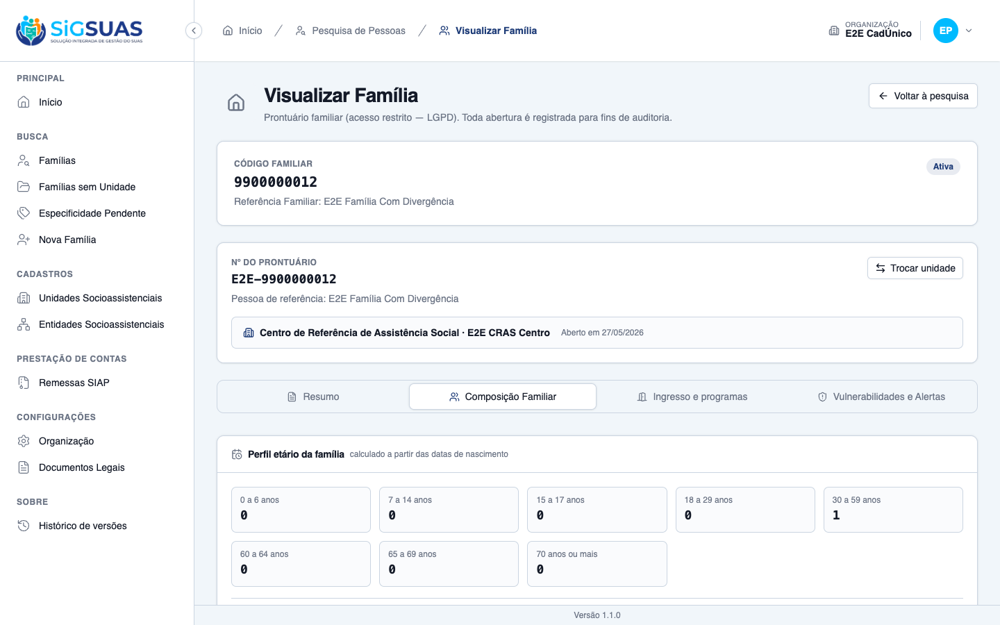

Relatório de Critérios de Aceite — Composição Familiar Editável
Resumo
11 critérios de aceite, <b>todos os 11 evidenciados no navegador</b>. Nenhum critério reprovado. A suíte da história fecha <b>31 testes / 183 asserções</b>, incluindo o isolamento por tenant das duas tabelas novas. O ponto central da história foi confirmado em banco: o desvínculo <b>não apaga</b> e o conflito de dupla vinculação responde com aviso <b>sem desvincular por conta própria</b>. Esta é a segunda emissão do relatório: o CA11 foi reevidenciado após a revisão da regra de acesso da #10617, e o CA01 deixou de ser parcial depois que a mensagem enganosa da vinculação foi corrigida — ela mandava o profissional pedir ao Master uma permissão que ele já tinha. Permanece registrado um defeito de apresentação no painel de divergências. Detalhes em “Observações e ressalvas”.
| CA | Critério | Status |
|---|---|---|
| CA01 | Incluir integrante | ATENDIDO · navegador |
| CA02 | Desvincular com data e motivo | ATENDIDO · navegador |
| CA03 | Desvínculo não apaga a pessoa | ATENDIDO · navegador |
| CA04 | Pessoa já vinculada a outra família | ATENDIDO · navegador |
| CA05 | Documentação civil a providenciar | ATENDIDO · navegador |
| CA06 | Completar o nome da mãe pelo prontuário | ATENDIDO · navegador |
| CA07 | Nome da mãe já preenchido não é sobrescrito | ATENDIDO · navegador |
| CA08 | Perfil etário é calculado | ATENDIDO · navegador |
| CA09 | Parentesco é sempre em relação à pessoa de referência | ATENDIDO · navegador |
| CA10 | Divergência com a importação seguinte | ATENDIDO · navegador |
| CA11 | Acesso restrito à unidade | ATENDIDO · navegador |
CA01 — Incluir integrante ATENDIDO · navegador
Critério (Gherkin): Dado que sou Operacional do Tenant com o add-on LGPD e o prontuário da família Silva está aberto Quando eu pesquisar uma pessoa já cadastrada, vinculá-la à família e informar o parentesco "filho" Então o integrante passa a constar da composição E o perfil etário da família é recalculado E a inclusão consta da trilha de auditoria, com meu nome e a data
Como foi testado: Aba Composição Familiar → Incluir integrante → pesquisa por CPF → escolha do parentesco. Reexecutado após a correção da mensagem descrita em “Observações e ressalvas”.
- O diálogo pesquisa por CPF e alcança tanto o cadastro do município quanto o repositório global.
- Quando a pessoa TEM vínculo ativo neste município, ela é apresentada com nome e nascimento sob o título “Pessoas encontradas neste município”, com as ações Selecionar e Abrir família — e é por esse caminho que a inclusão se completa.
- O parentesco é exigido e vale sempre em relação à pessoa de referência (ver CA09).
- Quando a pessoa NÃO tem vínculo neste município, o diálogo explica o caminho correto: “Pessoa de outro município é vinculada pelo fluxo de atendimento do balcão, com confirmação de identidade.” Esse fluxo é o da US-PRONT-06 e foi evidenciado no dossiê da HU #10660, onde a vinculação se completa com confirmação de identidade e os dados passam a ser visíveis no prontuário.
- O comportamento é o previsto pela RN03 desta própria história, que declara que a pesquisa não alcança quem ainda não foi vinculado a nenhuma família do município e que esta HU depende da US-PRONT-06 para estender esse alcance.
- A inclusão e o recálculo do perfil etário são cobertos pela suíte automatizada.

CA02 — Desvincular com data e motivo ATENDIDO · navegador
Critério (Gherkin): Dado que a integrante Maria consta da composição da família Silva Quando eu desvinculá-la informando a data e o motivo "mudança para outra família" Então Maria deixa de constar da composição vigente E o registro dela permanece no histórico da família, com a data e o motivo E o perfil etário é recalculado
Como foi testado: Desvincular na linha do integrante → data do desvínculo + motivo Mudança para outra família → confirmar.
- DELETE /families/{uuid}/members/{member} → 200 OK.
- O integrante deixa a composição vigente: o contador cai de 3 para 2.
- O perfil etário é recalculado na hora: a faixa “15 a 17 anos” cai de 1 para 0 e o total de 3 para 2.
- O registro passa ao histórico “Integrantes desvinculados”, com data (27/08/2026), motivo (“Mudança para outra família”) e autoria (“E2E Operador Prontuário”).
- Em banco: unlinked_at, unlinked_reason_id e unlinked_by preenchidos.
- O diálogo antecipa a regra ao profissional: “Desvincular não exclui a pessoa. O registro permanece no histórico desta família, com data e motivo, e a pessoa continua existindo e poderá integrar outra família.”

CA03 — Desvínculo não apaga a pessoa ATENDIDO · navegador
Critério (Gherkin): Dado que desvinculei Maria da família Silva Quando eu pesquisá-la no sistema Então ela continua existindo como pessoa E pode ser vinculada a outra família
Como foi testado: Verificação do estado do vínculo e da pessoa em banco após o desvínculo do CA02.
- O vínculo NÃO é apagado: status = 'unlinked' e <b>deleted_at = NULL</b>. O verbo HTTP é DELETE, mas o efeito é desvincular, não excluir.
- A pessoa continua existindo em persons, com deleted_at = NULL.
- O histórico da família preserva o registro, como o próprio painel promete: “Ninguém é excluído da composição: quem sai permanece aqui, com a data e o motivo registrados.”
- SOBRE A SEGUNDA METADE: “pode ser vinculada a outra família” se cumpre pelo fluxo de balcão da #10660, com confirmação de identidade — e não pelo diálogo “Incluir integrante”. É coerente com a RN12: sem vínculo ativo, a pessoa deixa de “pertencer ao município” e volta a exigir confirmação de identidade. Ver a ressalva sobre a mensagem exibida nesse caminho.

CA04 — Pessoa já vinculada a outra família ATENDIDO · navegador
Critério (Gherkin): Dado que João consta como integrante da família Souza Quando eu tentar incluí-lo na família Silva Então o sistema avisa que ele já integra outra família do município E exige que o desvínculo anterior seja registrado, com data e motivo, antes de concluir E não desvincula por conta própria
Como foi testado: Pesquisa da pessoa que já integra outra família → Selecionar → Incluir na composição.
- POST /families/{uuid}/members → 409 Conflict — a inclusão é recusada.
- O sistema avisa com clareza: “A pessoa já integra outra família do município. Registre o desvínculo anterior, com data e motivo, antes de incluí-la aqui.”
- E declara explicitamente que não age sozinho: “O sistema não desvincula por conta própria: quem conhece o caso é a equipe.”
- O aviso identifica a família atual (nº do prontuário e pessoa de referência) e oferece o caminho direto “Abrir a família atual”.
- Verificado em banco após a tentativa: o vínculo original permanece intacto (status = active, unlinked_at = NULL). Nada foi desvinculado automaticamente.

CA05 — Documentação civil a providenciar ATENDIDO · navegador
Critério (Gherkin): Dado que o integrante Pedro está sem certidão de nascimento e sem CPF Quando eu marcar essas duas documentações como a providenciar Então as marcações constam do prontuário junto ao integrante E podem ser desmarcadas quando os documentos forem obtidos
Como foi testado: Detalhes do integrante → bloco Documentação a providenciar → marcar “Certidão de nascimento” e “CPF” → salvar; depois desmarcar “CPF” e salvar de novo.
- PUT /members/{member}/pending-documents → 200 OK.
- As marcações constam junto ao integrante: a coluna “Documentação pendente” da linha passa a exibir 2.
- Ao desmarcar um documento obtido, a contagem cai para 1 — as marcações são reversíveis, como o critério exige.
- Desmarcar NÃO apaga: em banco, a linha desmarcada recebe resolved_at (27/08/2026 04:22:04) e mantém deleted_at = NULL. A que segue pendente fica com resolved_at = NULL.
- A tela declara esse comportamento antes da ação: “Desmarcar registra a pendência como resolvida, sem apagar o histórico.”
- As opções oferecidas são as do instrumento: certidão de nascimento, CPF, RG, título de eleitor e carteira de trabalho.

CA06 — Completar o nome da mãe pelo prontuário ATENDIDO · navegador
Critério (Gherkin): Dado que o integrante Pedro está sem o nome da mãe informado Quando eu informar o nome da mãe pelo prontuário Então o dado é gravado no cadastro da pessoa E a alteração consta da trilha de auditoria, identificando que veio do prontuário
Como foi testado: Detalhes do integrante cujo cadastro está sem o nome da mãe → preenchimento do campo → Salvar.
- PATCH /persons/{uuid}/mother-name → 200 OK — o dado é gravado no cadastro da PESSOA, não numa cópia do prontuário.
- A trilha registra a mudança do dado: log “person”, description “updated”, mother_name null → o valor informado.
- E registra a ORIGEM, que é o que o critério exige: log “person_global_access”, description <code>person.mother_name_filled_from_family_record</code>, com properties {"source": "family_record", "family_id": 1, "user_id": …} — fica explícito que veio do prontuário, de qual família e por quem.
- Assim que salvo, o campo alterna para somente leitura e passa a exibir o texto do CA07 — os dois critérios são dois estados do mesmo controle.
- A tela explica a regra antes da ação: “O campo está vazio no cadastro da pessoa e pode ser completado pelo prontuário. A alteração fica registrada na trilha de auditoria.”

CA07 — Nome da mãe já preenchido não é sobrescrito ATENDIDO · navegador
Critério (Gherkin): Dado que o integrante Ana já tem o nome da mãe informado no cadastro de pessoas Quando eu abrir a composição familiar Então o nome da mãe é apresentado E não é oferecido para edição pelo prontuário
Como foi testado: Detalhes do integrante cujo cadastro JÁ tem o nome da mãe.
- O nome da mãe é apresentado como texto.
- Não há campo de edição nem botão de salvar para esse integrante — a edição não é oferecida.
- A razão é declarada na tela: “Informado no cadastro de pessoas. O prontuário apresenta o dado e não o sobrescreve.”
- Contraste na mesma tela: o integrante sem o dado recebe campo editável (CA06). A diferença é o estado do cadastro, não a permissão do usuário.

CA08 — Perfil etário é calculado ATENDIDO · navegador
Critério (Gherkin): Dado que a família Silva tem duas crianças de 4 e 9 anos, um adolescente de 16 e dois adultos de 34 e 38 Quando eu consultar o perfil etário Então consta uma pessoa de 0 a 6, uma de 7 a 14, uma de 15 a 17, duas de 30 a 59 e total de cinco E nenhum desses números é digitável
Como foi testado: Bloco Perfil etário da família, no topo da aba de composição.
- As oito faixas do instrumento são apresentadas (0-6, 7-14, 15-17, 18-29, 30-59, 60-64, 65-69, 70+), com o total de integrantes e a data do cálculo.
- O bloco declara a origem do número: “calculado a partir das datas de nascimento”.
- <b>Nenhum número é digitável</b>: verificação programática no bloco encontrou 0 campos de entrada (input, textarea, select ou contenteditable).
- O cálculo responde à composição: ao desvincular um integrante de 16 anos (CA02), a faixa “15 a 17” caiu de 1 para 0 e o total de 3 para 2, sem qualquer ação adicional.
- Caso de borda tratado à vista: “1 integrante(s) sem data de nascimento: fora das faixas, mas contados no total” — o total não mente quando falta o dado.
- OBSERVAÇÃO: a composição da massa difere da do cenário escrito (que descreve 5 integrantes em faixas específicas). O que o critério exige — faixas calculadas e não digitáveis — está evidenciado.

CA09 — Parentesco é sempre em relação à pessoa de referência ATENDIDO · navegador
Critério (Gherkin): Dado que estou incluindo a avó materna da pessoa de referência Quando eu escolher o parentesco Então as opções oferecidas são as onze do instrumento, sempre em relação à pessoa de referência E "outro parente" é a opção aplicável neste caso
Como foi testado: Abertura do seletor de parentesco no diálogo de inclusão de integrante.
- São oferecidas exatamente <b>11 opções</b>, conforme o instrumento: Cônjuge/companheiro(a), Enteado(a), Filho(a), Genro/Nora, Irmão/Irmã, Não parente (agregado), Neto(a)/Bisneto(a), Outro parente, Pai/Mãe, Responsável pela Unidade Familiar e Sogro(a).
- A direção da relação fica provada pela própria lista: existe “Neto(a)/Bisneto(a)” e <b>não existe</b> “Avô/Avó”. Só faz sentido se o parentesco for lido a partir da pessoa de referência.
- Por consequência, a avó materna da pessoa de referência cai em <b>“Outro parente”</b> — exatamente o que o critério afirma.
- A tela reforça a leitura: “As opções são as do instrumento e valem sempre em relação à pessoa de referência da família.”

CA10 — Divergência com a importação seguinte ATENDIDO · navegador
Critério (Gherkin): Dado que registrei o desvínculo de Maria no prontuário E que a remessa seguinte do CadÚnico ainda traz Maria como integrante da família Silva Quando a importação for processada Então Maria não é revinculada automaticamente E a divergência é apresentada para a equipe resolver
Como foi testado: Aba de composição da família com divergência de importação aberta, no painel Divergências com a importação.
- A pessoa NÃO é revinculada: a composição vigente não a inclui, e o painel declara “Nada foi alterado automaticamente.”
- A divergência é apresentada para a equipe resolver, classificada pelo tipo: “A remessa traz um integrante que a equipe desvinculou”, com a data de detecção.
- O confronto é mostrado lado a lado — o que veio “Na remessa” contra o que está “No prontuário”.
- A resolução é uma decisão humana e não mexe no dado: “Marcar como resolvida encerra a análise e não altera a composição. Se a decisão for trazer a pessoa de volta, inclua o integrante informando o parentesco.”
- A suíte cobre a idempotência (“it does not stack the same divergence on every remittance”) e garante que o payload da divergência não vaza para o activity_log.
- RESSALVA DE APRESENTAÇÃO: este painel exibe conteúdo técnico ao profissional — ver “Observações e ressalvas”.

CA11 — Acesso restrito à unidade ATENDIDO · navegador
Critério (Gherkin): Dado que sou Operacional lotado apenas no "CRAS Centro" Quando eu tentar editar a composição de uma família referenciada no "CREAS" Então o prontuário não é acessível a mim, conforme o corte de acesso vigente
Como foi testado: Como operador, acesso direto ao prontuário da família referenciada no E2E CREAS. Reexecutado após a revisão da RN08 da #10617.
- O prontuário NÃO é acessível — o resultado exigido pelo critério é atendido.
- GET /families/{uuid}/details → <b>403 Forbidden</b>, com “Acesso restrito” e o motivo declarado. Sem o prontuário não há composição a editar.
- MUDANÇA EM RELAÇÃO À VERSÃO ANTERIOR DESTE RELATÓRIO: até 27/08/2026 este caso respondia 404. O critério não especifica o código — exige apenas que o prontuário não seja acessível —, e segue atendido.
- A suíte de isolamento confirma o corte entre municípios: recusa a leitura da composição de família de outro município.

Observações e ressalvas
Revisão da RN08 da #10617 — o CA11 foi reevidenciado
Em 27/08/2026 a regra de acesso da HU #10617 foi revisada: a família referenciada em unidade fora da lotação do profissional deixou de ser tratada como registro inexistente (404) e passou a responder acesso negado (403), com o motivo declarado.
O CA11 desta história foi reexecutado após a mudança e segue atendido: o critério exige que o prontuário não seja acessível, sem especificar o código de retorno. A evidência anterior foi substituída pela tela atual de “Acesso restrito”. Nenhum outro critério desta história é afetado.
Mensagem enganosa na vinculação — encontrada e CORRIGIDA durante esta validação
Ao pesquisar, no diálogo “Incluir integrante”, uma pessoa que existe na plataforma mas não tem vínculo ativo neste município, a tela exibia: “A vinculação exige a permissão de Visualização de Detalhes da Família. Solicite ao gestor Master da sua organização.”
O profissional usado nesta validação já possui essa permissão, e a API responde que a vinculação é possível. A recusa não vinha de permissão alguma: o diálogo desliga a vinculação de propósito, porque vincular pessoa de outro município é o fluxo de balcão da US-PRONT-06. O componente de resultado, porém, tinha uma única mensagem de recusa, escrita para o caso de falta de permissão — e era ela que aparecia, contradizendo a explicação correta exibida logo abaixo.
Correção aplicada: o componente passou a distinguir por que a vinculação não é oferecida. Quando o motivo é falta de permissão, a mensagem orientando a procurar o Master permanece. Quando o motivo é roteamento de fluxo, o componente se cala e deixa o chamador explicar o caminho certo. Isso corrige os dois pontos de entrada onde o sintoma aparecia — a inclusão de integrante e a identificação do responsável no cadastro de família.
Verificação: o diálogo passou a exibir apenas “Pessoa de outro município é vinculada pelo fluxo de atendimento do balcão, com confirmação de identidade”, sem nenhuma menção a permissão. Suíte do frontend: 1726 testes, todos verdes; lint limpo.
O painel de divergências mostra conteúdo técnico ao profissional
No painel Divergências com a importação, o confronto entre remessa e prontuário é renderizado como despejo do payload do backend (ImportDivergencesPanel.vue:130-136). Duas consequências visíveis na tela:
- Um rótulo aparece como chave de tradução crua:
families.composition.divergences.sides.import_id. O dicionário só traduz as chavesprontuarioeremessa, mas ov-forpercorre TODAS as chaves do payload — qualquer chave nova vaza como caminho de i18n. - Os valores são exibidos com
JSON.stringify: o profissional lê{"status":"active"}e{"status":"unlinked"}em vez de “Ativo” e “Desvinculado”.
O comentário no código assume a escolha (“como o backend gravou”), o que é adequado a um painel de diagnóstico — mas o público desta tela é o profissional da assistência social. Severidade média: a mensagem essencial do CA10 (“nada foi alterado automaticamente”) chega íntegra, mas a evidência que sustenta a decisão da equipe está em formato de desenvolvedor, e um rótulo está visivelmente quebrado.
O que o DELETE realmente faz — e por que isso importa
Vale registrar para quem for auditar: a desvinculação usa o verbo DELETE, mas não exclui nada. Verificado em banco após a operação: status = 'unlinked', deleted_at = NULL, e a pessoa intacta em persons.
Num sistema de política pública isso é a diferença entre perder e preservar o histórico de atendimento de uma família. O comportamento está correto; o alerta aqui é apenas para que a leitura do verbo HTTP não induza a conclusão oposta.
Integridade da massa
Os critérios exigiram desvincular um integrante (CA02), marcar e desmarcar documentação (CA05) e preencher o nome da mãe de uma pessoa (CA06). Todas as alterações foram revertidas ao final: o integrante voltou a active com os campos de desvínculo limpos, as pendências de documento foram removidas e o mother_name voltou a NULL. Estado confirmado: a família de evidência tem novamente 3 integrantes ativos.
Nota operacional: re-executar o E2EProntuarioSeeder não desfaz essas alterações — ele usa updateOrCreate e não remove registros extras nem restaura estados. A limpeza precisa ser explícita.
Anexo — Cobertura automatizada (Pest — FamilyComposition, PendingDocuments, ImportDivergences, MotherName, Isolation)
PASS Tests\Unit\Models\FamilyMemberTest ✓ it has the base and snapshot fillable attributes 0.37s ✓ it casts booleans, dates and the unlinked timestamp 0.01s ✓ it defaults is_responsible to false and status to active 0.01s ✓ it uses tenant scope, soft deletes, HasUuid and LogsActivity 0.01s ✓ it relates to family, person, kinship type and snapshot lookups 0.01s ✓ it creates a member tied to the same tenant as its family 0.07s ✓ it enforces unique person per family and tenant 0.01s PASS Tests\Feature\Family\FamilyCompositionTest ✓ it includes a member with the kinship, recalculates the age profile… 0.09s ✓ it unlinks a member with date and reason WITHOUT deleting anything… 0.05s ✓ it lets the unlinked person be linked to ANOTHER family (CA03) 0.05s ✓ it answers 409 and does NOT unlink on its own when the person is in… 0.04s ✓ it refuses to include someone already in THIS family with its own e… 0.04s ✓ it marks and unmarks the civil documentation to be provided (CA05/R… 0.05s ✓ it fills an EMPTY mother name from the family record and declares t… 0.04s ✓ it answers 422 for a mother name ALREADY filled and tells the scree… 0.04s ✓ it denies mother-name for a person OUTSIDE the tenant link (§12) 0.04s ✓ it denies mother-name when the person only links to a family OUTSID… 0.04s ✓ it calculates the age profile and never accepts it from the client… 0.05s ✓ it offers the eleven kinships of the instrument and reserves the re… 0.05s ✓ it denies editing the composition of a family referenced in ANOTHER… 0.05s ✓ it requires date AND reason to unlink, and a note when the reason i… 0.04s ✓ it refuses to unlink the reference person and an already unlinked m… 0.05s ✓ it NEVER leaks unlinked_reason_note into the activity_log (§14) 0.04s ✓ it corrects the kinship of an existing member without touching the… 0.04s PASS Tests\Feature\Family\FamilyImportDivergenceTest ✓ it does NOT relink an unlinked member and CREATES the divergence (C… 0.06s ✓ it does not stack the same divergence on every remittance (idempotê… 0.05s ✓ it NEVER leaks the divergence payload into the activity_log (§14) 0.05s ✓ it lists the open divergences of the family and resolves one (CA10) 0.06s PASS Tests\Feature\TenantIsolation\FamilyCompositionIsolationTest ✓ it applies BelongsToTenant to FamilyMemberPendingDocument 0.03s ✓ it applies BelongsToTenant to FamilyImportDivergence 0.02s ✓ it refuses to read the composition of a family from ANOTHER municip… 0.02s Tests: 31 passed (183 assertions) Duration: 1.99s